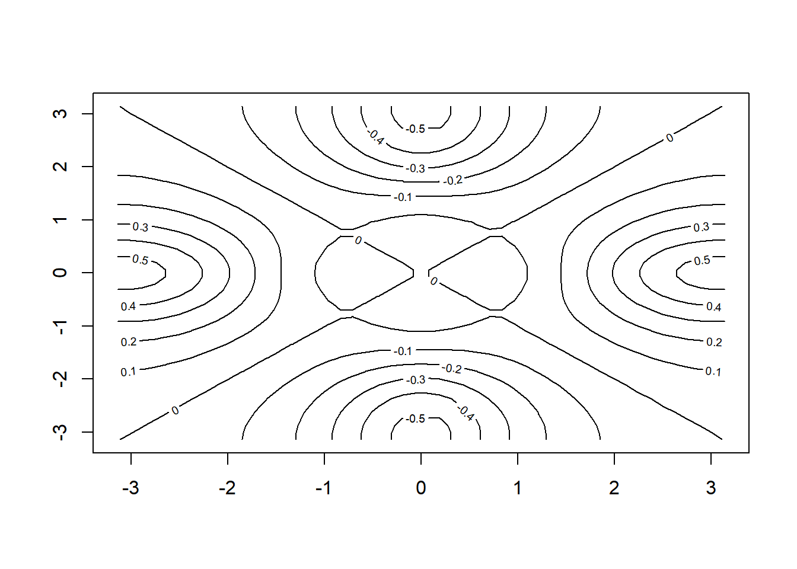

R基础知识（一）
Boylad · 2018-12-02
ls()函数可以查看所有的对象列表
rm()函数可以用来去除对象
rm(list = ls())消除所有的对象
pdf()函数去创建一个pdf文件
jpeg()函数建立一个jpeg格式的输出文件
dev.off()函数指示用R创建图形的工作到此为止
pdf("Figure.pdf")
plot(rnorm(100), rnorm(100), col = "green")
dev.off()
## png
## 2contour()函数产生一个等高线图，它用于表示三维数据；形式上就像一幅地图。它有三个参数：
x值的向量(第一维)
y值的向量(第二维)
每对(x,y)坐标上标记某个矩阵的元素，用z记(第三维)
x = seq(-pi, pi, length = 50)
y <- x
f <- outer(x, y, function(x, y) cos(y) / (1+x^2))
contour(x,y,f)
contour(x,y,f,nlevels = 45, add = T)fa <- (f - t(f)) / 2 #f是一个矩阵，t表示转置
contour(x,y,fa, nlevels = 15)
image()函数与contour()函数工作原理相似，只不过它能产生一个有颜色的图形，颜色随z值的不同而不同。这就是所谓的热地图(heatmap)，常常用于绘制天气预报上的温度变化。另外，persp()函数可以用来产生一个三维图。参数theta和参数phi可以控制观看图形的角度。
image(x,y,fa)persp(x,y,fa)persp(x,y,fa,theta = 30)persp(x,y,fa,theta = 30, phi = 20)persp(x,y,fa,theta = 30, phi = 70)
persp(x,y,fa,theta = 30, phi = 40)fix()函数可以开启一个电子表格窗口来浏览数据。然而，在有新的R命令被应用之前这个窗口需要被关闭(为此，在下面代码中fix()函数被注释了)。
library(MASS)
library(ISLR)
data(Auto)
#fix(Auto)read.table()函数中，参数na.strings = “?”告知R在扫描数据的任何位置只要遇到指定的字符特征或者一个特征集(如问号标记)，应该在数据矩阵中对这条数据做确实标记。
na.omit()函数简单地剔除含有缺失值的行。
attach()函数来告诉R允许在指定的数据框里的变量通过变量名调用。
as.factor()函数将一个定量的变量转换成一个定性的变量。
pairs()函数可以用于建立一个对任何指定数据集中每一对变量的散点图矩阵。也可以为这些变量的子集产生一个散点图。
pairs(Auto)pairs(~mpg + displacement + horsepower + weight + acceleration, Auto)如果要绘制在X轴上的变量是定性的，箱线图(boxplot)将自动通过plot()函数差生：
attach(Auto)
cylinders <- as.factor(cylinders)
plot(cylinders, mpg, col = "red")
plot(cylinders, mpg, col = "red", varwidth = TRUE)plot(cylinders, mpg, col = "red", varwidth = TRUE, horizontal = TRUE,
xlab = "cylinders", ylab = "MPG")紧随plot()函数之后的identify()函数提供了一个有用的交互式别方法，可以对图上的每个点指定显示某个变量值。下例中，identify()输入了三个参数：x轴变量，y轴变量，以及我们希望在屏幕上为每个点打印出的变量名称。单击一个图上的某个点，将引导R打印指定变量上这个点的值。点击这个图，将推出identify()函数。默认情况下，在identify()函数下显示的数字代表这个点的行号。注：在Rmarkdown中不能交互。
plot(horsepower, mpg)
identify(horsepower, mpg, name)## integer(0)当用R完成分析时，可以输入q()关闭它，或者退出。当推出R时，可以选择保存当前工作区，这样就对下次使用这次R会话里已经创建的所欲对象(如数据集)做了布置。在推出R之前，可以用savehistory()函数将最近会话里输入的所有命令都保存成一个记录；下次进入R时，可以用loadhistory()函数载入这些历史记录。
以上内容整理自《An Introduction to Statistical Learning with Applications in R》